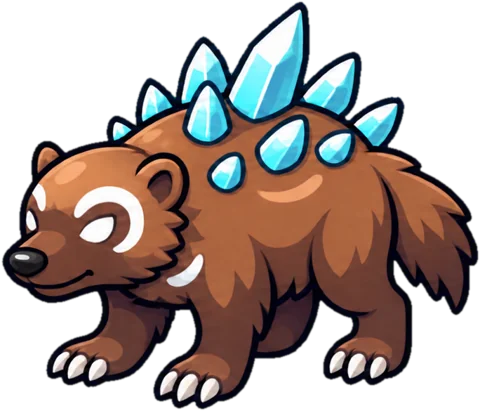

Tap a stage to read its story.
A stocky, warm-brown weasel-shaped cub with a row of pale-blue crystal spikes erupting along its spine, Rocklet trots through the Steel Fortress with more bravado than wisdom. It gnaws on metal scraps it finds near the fortress walls, and the minerals season its growing crystals a faint silver hue. When playful it hops onto its back and slides down metal ramps spine-first, chiming like wind-bells. Fortress apprentices prize Rocklet companions for the early warning they give - those spine-crystals vibrate before anyone else hears trouble coming.
Field note: Rocklet's spine-crystals ring like a glassware tap when a door opens anywhere within thirty metres.
Steel Fortress. Rocklet and its family are found in the Steel Fortress. See everyone who lives there.
Share a Bond Food that matches its types to become friends. Rocklet loves:
A Bond Food is not a trick. It joins your spirit with the Kimuro's spirit, and only when it chooses you.
Print the Kimuro adventure packs: mazes, cards, a board game and Bond Mark medals.
See the printable packs